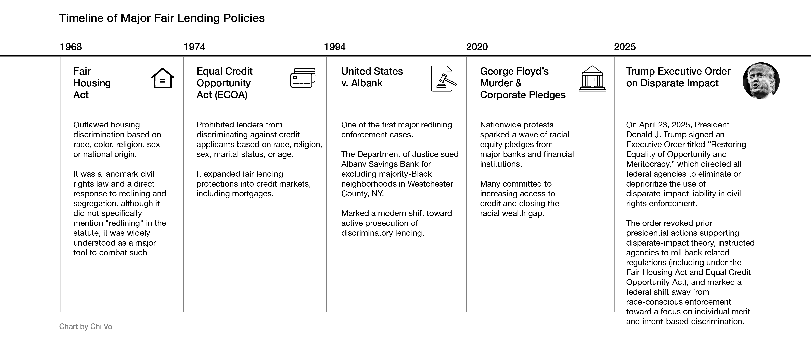
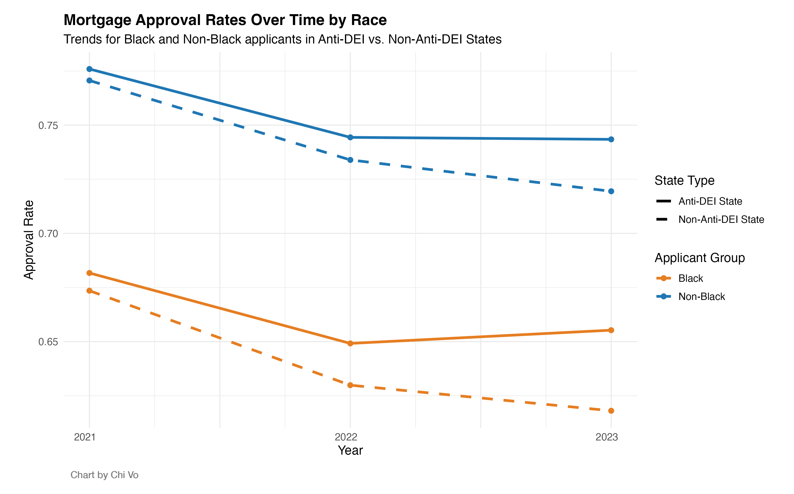
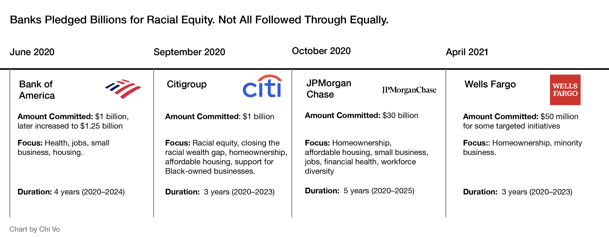
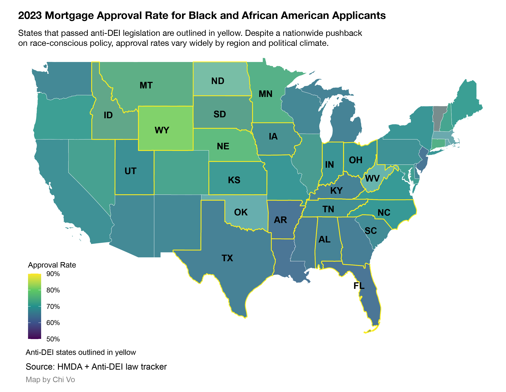
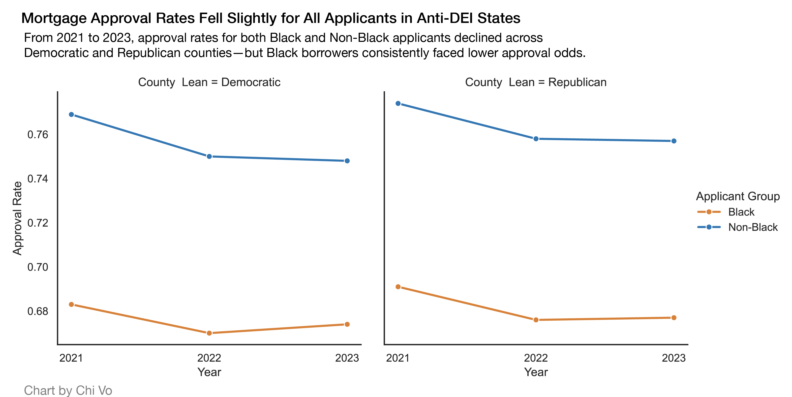

"A bank I worked for 'arbitrarily' decided not to lend below I-287 in NY's Westchester County." said Stephen Michael, a former employee at a bank in Westchester County, New York.
I-287 is an interstate highway serving north New Jersey and counties of Rockland and Westchester. According to Michael, most social minority groups live below that highway. "USA vs Albank. A clear example of redlining." he said.
In 1994, the Department of Justice sued Albany Savings Bank for engaging in discriminatory lending practices—specifically, redlining. The case known as "United States v. Albank" is one of the first major redlining cases. Although the Fair Housing Act and the Equal Credit Opportunity Act aimed to stop future discriminatory practice towards marginalized communities, Michael warned systematic discrimination still draws invisible lines, pointing to a daunting financial future.
For anti-diversity, equity, and inclusion law in particular, Michael said, ignoring its impact on mortgage lending would be "an "incredibly naive viewpoint."
Anti-diversity, equity, and inclusion legislation takes many forms. Some laws restrict how race, discrimination and sex are taught in schools. Others ban training programs focused on equity or require state funds to be invested solely based on financial returns. These laws do not target housing directly. However, they reflect a broader political movement to roll back race-conscious policy.
The demographic profile of borrowers, nevertheless, points to a more intricate dynamic. Delving into the enormous mortgage data, we analyzed more than 15 million mortgage applications from the public Home Mortgage Disclosure Act dataset and focused on potential factors like income level, loan size, debt-to-income ratio, and geography between 2021 and 2023. Compared to years before the establishment of anti-DEI law, we found no reduction of black mortgage approval rates after these laws. In some states, we found slight improvement in loan approvals after the law was passed.
The recent shift in legal enforcement diverges from prevailing public sentiment. "Social pressure after incidents such as George Floyd may produce stronger effects on bank minority lending than regulatory pressure," said Dr. Linh Nguyen, a finance professor at the University of St Andrews.
Many large banks remain sensitive to public scrutiny and reputational risks, particularly after high-profile scandals. In response, several launched equity-focused initiatives. In 2020, major banks made public equity pledges, committed to help close the racial wealth gap and advance economic opportunity for communities of color. JPMorgan Chase committed $30 billion to advance racial equity, including expanding affordable housing and homeownership for Black and Latino communities, supporting minority-owned small businesses. Bank of America and Citigroup announced similar initiatives. "Banks are very concerned about reputational risks," Dr. Nguyen said, "they are more socially committed after scandals like the Wells Fargo incident in 2016."
Dr. José Loya, an expert in urban planning and ethno-racial inequality at UCLA is not convinced by this explanation. "Some of the largest mortgage lenders are not public-facing," Loya said, "so media scrutiny may not have a large impact on their practices."
According to Loya, systemic barriers in the mortgage system remain. "Black and Latino home seekers continue to face large obstacles in the homeownership market, especially when trying to buy a home in predominantly minority neighborhoods," he said.
Lending patterns also differed along political lines: approval rates for black applicants rose in Joe Biden-voting counties but fell in those that supported Donald Trump. Our analysis found that approval rates for Black applicants rose in counties that voted for Joe Biden, but the same gains were not observed in Trump-supporting counties.
he Home Mortgage Disclosure Act dataset doesn't reflect the whole picture. With a focus on approval rates, the data doesn't capture all potential borrowers, especially those who never completed or even began an application
Trump's executive order in April 2025 makes the process of proving potential discrimination more difficult. This order eliminated the use of "disparate impact" in civil rights enforcement. Accompanying the order is the White House fact sheet, rejecting disparate-impact liability:"It is a legal theory holding that differences in outcomes among races, sexes, or similar groups indicate unlawful discrimination, even without discriminatory intent or policies." The sheet said, this legal theory violates the Constitution's guarantee of equal treatment.
Disparate impact has been a central tool in fair housing enforcement. It allows civil rights groups to challenge policies that result in unequal outcomes. Without it, agencies like the Department of Housing and the Consumer Financial Bureau stop using disparate-based theory to evaluate discrimination, making it harder to hold lenders accountable as proving explicit discriminative intention is difficult. Civil rights advocates also warn that systemic bias embedded in algorithms or standard practices can escape scrutiny. In an interview with the Washington Post, Jenny Yang said, ""this effort by the administration to remove this tool sets us back decades."Yang previously served as chair of the Equal Employment Opportunity Commission under President Barack Obama and as an official under President Joe Biden.
With the current available dataset, we don't see a sharp drop in black mortgage applicants' approval, contrasting to the fear after Trump's order. However, multiple experts and advocates said, this doesn't signal an optimistic future. With weaker legal tools like disparate impact, social minorities face more challenges to defend their rights. The gap between major and marginalized groups' homeownership denotes the persistent systemic bias. As policies and scrutiny ebbs and flows, old patterns of exclusion may find new forms. For now, the fight for fair lending continues.